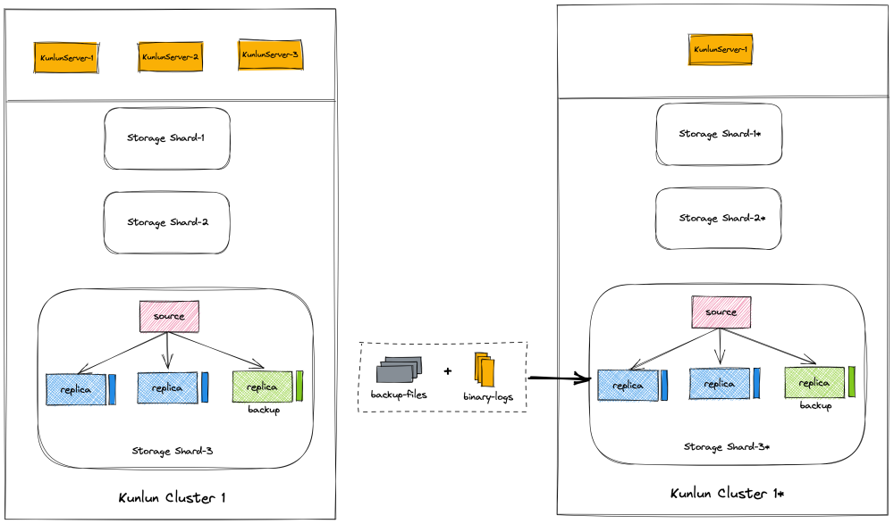
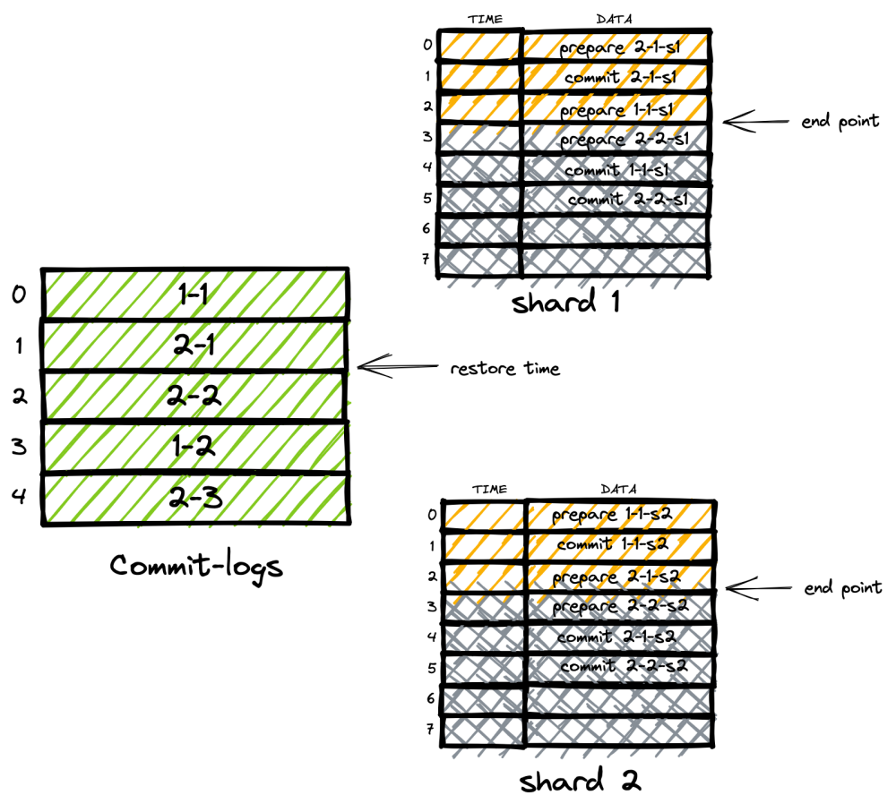

Kunlunbase 全局一致性恢复
数据备份及全局一致性恢复
数据的备份与恢复是数据库管理系统的生命线。现实的应用环境中没有任何一个数据库管理系统能做到零故障，这其中包括硬件故障和软件故障。那么既然故障无法避免，那么可靠的数据备份及恢复机制就是数据安全的最终保障和兜底手段。 KunlunBase 作为一款企业级的分布式数据库管理系统，数据的安全性是我们最为关注的产品特性之一。 但由于KunlunBase 其本身的架构特点，使得在保证数据恢复的一致性、完整性等要求方面，面临着不小的技术挑战。本文将从 KunlunBase 的数据备份，数据一致性恢复两个方面展开，介绍团队在实现可靠的数据备份及一致性的数据恢复上所做的工作。
1.KunlunBase 数据备份
数据库备份，常规意义上是指定期的在某一时间点对数据库的数据进行备份，其产生的数据备份文件表示的是整个数据库的一个与时间点有关的一致性镜像。由于数据库本身是不断地被读取和修改，因此仅仅定期的对数据库进行静态的备份是无法满足数据库能够按任意时间点恢复这样的要求，因此，对数据修改的变更日志也通常是备份系统需要备份的对象之一。 本节会首先对 KunlunBase 的整体架构做一个简要的介绍，让读者对各个组件的功能和职责有一个整体的认知。然后会分别介绍 KunlunStorage 的全量热备方案和增量日志备份方案。
1.1 KunlunBase 整体架构
-
KunlunServer(计算节点） 计算节点运行无状态计算&查询引擎，与Kunlun Storage进行交互执行SQL 任务，采用异步通信模式，一个计算节点可以协调多个存储节点执行数据处理（增删改查）任务。计算节点从元数据集群获取集群元数据并在本地持久化。各个计算节点独立处理SQL计算。Kunlun Server支持标准SQL连接。
-
KunlunStorage(存储节点）
采用Shared-nothing架构，各存储节点运行一定数目的存储引擎实例，用来持久化应用（用户）数据。存储引擎执行计算节点发起SQL语句（在XA事务中的分支）。可以使用MGR单主模式或Binlog强同步模式做集群高可用。
- Meta Cluster(元数据集群）
用来存储着若干个昆仑分布式数据库集群的元数据，及分布式事务两阶段提交的commit log。元数据集群采用一主两从的部署模式。
- Cluster manager(集群管理服务)
集群管理（Cluster_mgr）作为守护进程运行，负责监控和维护每一个存储集群及其节点的replication状态、集群计算节点与存储节点之间的元数据和状态同步、处理分布式事务节点故障处理等。集群管理器提供API供第三方管理软件调用。
- Node manager(节点管理服务)
节点管理（Node_mgr）在集群的每一台机器运行，检测该机器上所有计算节点，以及存储节点的状态，对所有节点实例进行保活管理。并通过HTTP接口接收集群管理的命令，进行节点实例安装，删除等功能。
通过上述介绍我们可以看到，备份服务需要备份的系统组件包括 KunlunStorage, KunlunServer, Meta Cluster 这三个部分的数据。其中 KunlunServer 本身是无状态的服务，因此并且其元数据可以通过对 Meta Cluster 中对应的 DDL log 的重放来恢复。Meta Cluster 本身也是一个 MySQL 的容灾集群，它的备份及恢复方式与 KunlunStorage 相似。因此本文着重介绍 KunlunStorage 的全量热备及增量备份技术。
1.2 KunlunStorage 全量热备
KunlunStorage 是一个主备全同步的 MySQL 的容灾集群。全量热备是指在不影响实例运行的前提下，对数据库实例进行全量备份。Percona Xtrabackup 作为一款开源成熟的 MySQL 数据库物理热备份的工具，其本身已经在 MySQL 生产环境中运行多年，有足够的可靠行和稳定性。因此团队选择 Percona xtrabackup 8.0 作为KunlunStorage 全量热备的工具。 另外一个需要确定的问题是，在一个一主多备的KunlunStorage 集群中，如何选举备份节点？这里我们采用的策略是选在与主机差异最小的备机作为备份节点。当该节点被选择为备份节点后，除非该节点的备机延迟超过了 120 分钟，触发备份节点的重新选举，否则该节点一直为该 KunlunBase 集群的备份节点，所有的全量热备操作都会发生在该节点上。

当备份节点因为某些原因导致与主机的延迟超过了120 分钟，则进行备份节点的重新选举。在选举完成后，会对新的备份节点进行一次全量的备份。这样做的目的是为了能够使得全量备份的镜像和增量备份的日志都源自于同一个 MySQL 实例，便于后续的恢复操作。
1.3 KunlunStorage 增量备份
由于数据库实例是被源源不断的业务请求不断更改的，因此数据库的变更日志也是备份系统的重要备份对象之一，只有对增量的数据变更日志进行了备份，才能实现真正的按时间点恢复。
KunlunStorage 本质上是一个多节点的 MySQL 主备容灾集群，因此数据库的变更日志对应于 MySQL 实例就是它的二进制日志，也就是我们熟知的 binlog。
在具体的实现层面，我们实现了一个 MySQL插件，专门用于备份对应实例的 binlog 日志，该插件由相关系统变量控制，只有当对应的变量打开时，该备份插件才会开始工作，将对应实例的 binlog 以字节流的方式备份到对应的冷备存储系统中。
2.KunlunBase 数据按时间点恢复技术
数据库恢复往往发生在系统的灾难场景，如误删数据等情况。恢复手段就是将数据库恢复到错误操作前的时间点。KunlunBase 的按时间点恢复流程涉及到系统的多个组件，本小节首先会对按时间点恢复的整体流程进行一个介绍，然后着重介绍下 KunlunStorage 的数据恢复的细节，包括数据的全量恢复和增量数据恢复。
2.1 恢复的整体流程
假设当前有一个 KunlunBase 集群，包含三个 Server 节点，3 个 Storage Shard 集群。如果现在需要对该集群进行按时间点恢复操作，将数据恢复到 35 小时前的状态，那么整个恢复流程包含以下几个阶段：
- 1. 按照当前实例的相同规格，购买一个新的实例，用于存放恢复后的数据。相同规格的含义包括相同的 Storage Shard 个数；每个 Storage Shard 的容灾配置相同，即相同的副本数；每个 MySQL 实例的配置完全相同。
- 2. 针对每一个 Storage Shard 完成全量恢复和增量数据恢复。

- 3. 根据源集群的 DDL log 和恢复时间，构建新集群的 DDL log 日志，使得 KunlunServer 的本地元数据信息处于源集群的待恢复的时间点的状态。
- 数据恢复流程结束，新集群可以对外服务，此时新集群的数据状态就是基于给定时间点的历史状态。
2.2 如何正确的选择数据备份文件
在介绍 KunlunStorege 的数据恢复前，我们首先用一张图来介绍下，存储集群的全量与增量备份的时序关系是怎样的，这关系到我们如何选取合适的备份文件用于新集群的恢复。
上面的图，表示了随着时间的推移，全量和增量数据的备份发生的时间。其中蓝色的点表示进行全量备份的时间。黄色的部分表示进行增量备份的时间。由于全量备份是一次性的，而增量备份是随着时间的推进，不断机型的，因此我们可以看到上图是由离散的全量备份时间点和连续的增量备份时间段所填充。
其中全量备份是每间隔一个固定的时间进行的，在实际的配置中，每个 KunlunStorage 集群都会在凌晨 01:00 ~02:00 这个时间段内至少完成一次成功的全量备份。
增量备份是持续不断进行的，这里有读者可能会有疑问，如果当业务低峰，没有任何的业务数据变更发生的时候，是不是增量备份就不会发生。在 KunlunStorage 的中，为了确保 MySQL实例都是存活的，每个主节点都会由 Node Manager 没间隔 3 秒就写入一个心跳数据，因此从外部看，每个 KunlunStorage 的增量日志都是在不断产生的。
假设当前的时间点位于 20 ，选定的恢复的时间点为 15至 16 之间。那么在选择全量备份的文件的时候，我们就需要选在距离恢复时间最近的一次历史全量备份文件作为数据恢复的全量镜像文件。增量数据文件需要选择的就是从时间点 14 开始一直到恢复时间的所有的 binlog 文件。
2.3 利用数据备份文件进行恢复
利用 Xtrabackup 生成的冷备文件，依然可以利用 Xtrabackup 本身进行恢复。在完成了 Xtrabackup 的冷备恢复后，接下来需要完成的就是利用 2.2 中选择的binlog 文件，将数据状态恢复到 restore time。
在这一个步骤中，需要首先对待重放的 binlog 文件进行预处理，即确定 binlog 重放的起始和终止位置。
- Binlog 起始位置的确定
这里的起始位置逻辑上就是 Xtrabackup 进行全量备份的一致性镜像点。这个信息可以从 Xtrabackup 冷备文件中找到。在这里会将将该信息转换为待恢复 binlog 的文件名和偏移量信息，暂存在本地。
- Binlog 终止位置的确定
binlog 重放的终止位置，就是恢复的时间点所对应的文件位置，在一致性恢复的场景下，还需要考虑分布式事务的完成情况。
在确定了 binlog 文件重放的起始和终止位置之后，将预处理后的 binlog 文件拷贝到当前待恢复实例的 relay log 文件目录下，将这些 binlog 文件伪装成 relay log 文件并创建一个虚拟的主备同步通道，利用 MySQL 自身的并发重放来完成这些增量日志的处理。
每一个 MySQL 都遵循上述的流程，一个 KunlunStorage 的所有的实例都完成了恢复后，再将这些 MySQL 实例组成一个全同步的主备集群，至此，一个 KunlunStorage 就恢复结束了。
3.KunlunBase 全局一致性恢复
上面两个小节讨论了 KunlunBase 备份和按时间点恢复的整体流程和日志恢复技术。但是存在一个遗留问题那就是分布式事务的一致性恢复问题。所谓分布式事务的一致性恢复是指，当分布式数据库的一致性恢复流程结束时，所有的全局事务在所有的 resource manager 上都是处于提交状态。
本节首先描述 KunlunBase 在数据恢复中存在的分布式事务不一致的问题，然后在给出解决方案。
3.1 按时间点数据恢复的全局一致性问题
假设当前的集群的 commit-log 与每个 shard 上binlog 中的事务提交顺序如下图所示
其中 commitlog 中数据 2-1 表示由 ID 为 2 的 Server 节点发起的编号为 1 的事务，2-1-s1 表示全局事务为标识为 2-1 的事务在 Shard 1 上的子事务 id。KunlunStorage 的子事务采用 MySQL 的 XA 协议，因此在 binlog 中的两阶段提交会体现为 prepare-commit 两个事件。
从上面的两个shard 的binlog 事件列表中我们可以发现，全局事务 ID 在 commit log 中的顺序，和在两个 shard 上的提交顺序有可能不一致，产生这样的现象的原因如下：
- 每个 KunlunServer 是相互独立的，其处理全局事务的时序与其他节点没有关联。
- 每个 KunlunServer 内部，不同 Session 处理全局事务的时序是并发的没有关联的。
在如上图这样的前提下，如果进行一个按时间点恢复，假设客户预期的恢复的时间点，是全局事务 1-1 与 2-1 全部提交，后续的事务都没有开始。根据第二节我们讨论的按时间点恢复增量日志的方式来处理 binlog 的话，就有可能出现这样的情况。

此时，shard1 和 shard2 对应的事务的可见性就是不同的
3.2 KunlunBase 全局一致性恢复技术
从上面的分析中我们可以看出来，问题产生的关键是：在处理增量日志的时候，每个独立的 shard 在仅依靠时间的前提下无法完整的处理所有该分支的子事务，因为依靠时间是无法获取全部的子事务 id 集合。
因此，我们处理该问题的主要思路就是：当每个 shard 在进行增量日志处理的时候，明确的给出需要处理的子事务的集合，当且仅当所有的子事务的增量日志都处理完后，才算增量日志处理结束。
我们通过如何获取某个 shard 需要处理的子事务的集合以及如何根据子事务的集合来判断增量日志的结束点位 这两个方面来介绍整个全局一致性恢复技术的细节。
3.2.1 子事务集合的获取
从第二节的日志重放流程我们知道，子事务的范围应该是从冷备镜像点开始，一直到回档时间点的全局事务在当前 shard 的分支事务的集合。通过 commit log 和回档时间点，我们可以从元数据集群中获取到全局事务的终止位置。那么其实位置如何获取呢？
我们通过对 Xtrabackup 的修改，使得在冷备的最后节点获取一致性镜像点的时候，通过加锁的方式获取 commit log 的最大的 id，并将该 ID 记录到文件中，随冷备的数据文件一同压缩存储。
在恢复的时候，冷备文件中的 commit log 的 ID 作为起始 ID，依据恢复时间在 commit-log 中对应的 id 为终止 ID。由此来获取要处理的分支事务的 ID 集合。
3.2.2 增量日志的预处理
因此，在参考了分支事务集合的情况下，增量日志的终点确定将依赖分支事务集合是否处理完毕为依据。如下图所示
4.总结
KunlunBase 的定期的全集群全量备份，以及不间断的数据变更流式备份会自动处理在备份过程中的节点故障，确保所有的已提交的数据变更都会被成功的备份。任意时间点的全局一致性回档功能能够确保恢复出来的新集群的全局事务处于一致性状态。上述功能的实现，能够确保用户数据的安全，提升用户体验。